Preamble
In this first technical lab, we will complete any remaining steps of the first demonstration lab then turn to an orientation of the ArcGIS Desktop Interface. This orientation should be used extensively to aid with the completion of the first assignment due Sunday evening at 11:59pm.
Data
The data for this demonstration lab comes from the Natural Earth project located HERE.
To start, download the data either from Natural Earth or via ‘direct download’:
Use the ‘direct download’ if the Start Kit from Natural Earth takes too long - or not at all.
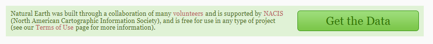
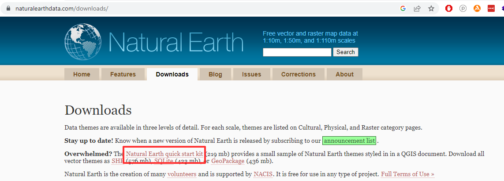
Once complete, extract the zipped directory and open the directory folder. The results - including the project .mxd - are located in the unzipped directory:
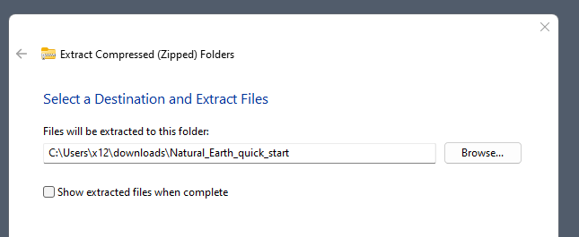
Step 1
- Navigate to the directory folder
Natural_Earth_quick_startthen double-click theNatural_Earth_quick_start_for_ArcMapfile. This will prompt ArcGIS Desktop to load the project on the machine. The Table of Contents should feature both vector layers and raster layers (.tif):
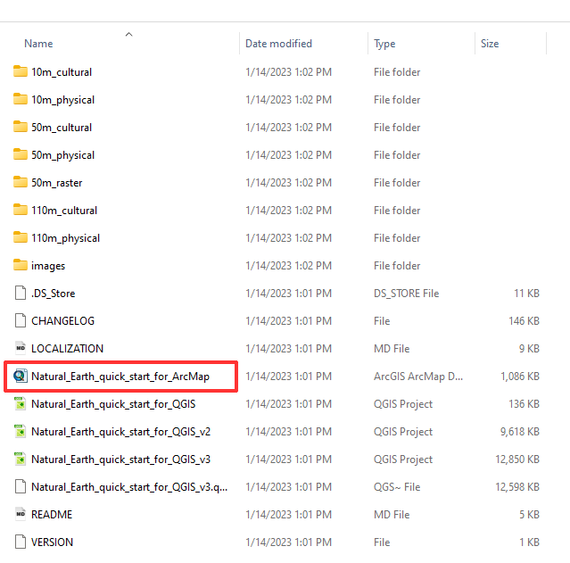
.mxd highlighted.Step 2
The Table of Contents should feature the following vector layers and raster layers:
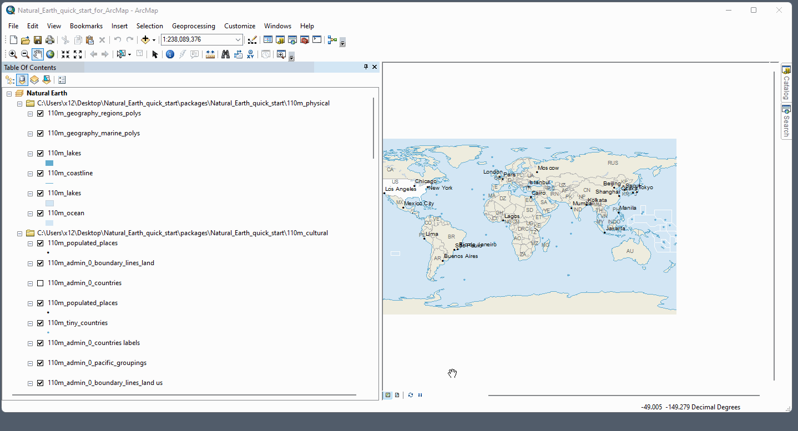
With the starter data loaded correctly, we will turn to reviewing the ArcGIS Desktop (ArcMap) interface. Utilize the handout PDF to assist with orienting to the interface.
Step 3
Together as a group, we will review the core components of the interface, including the following:
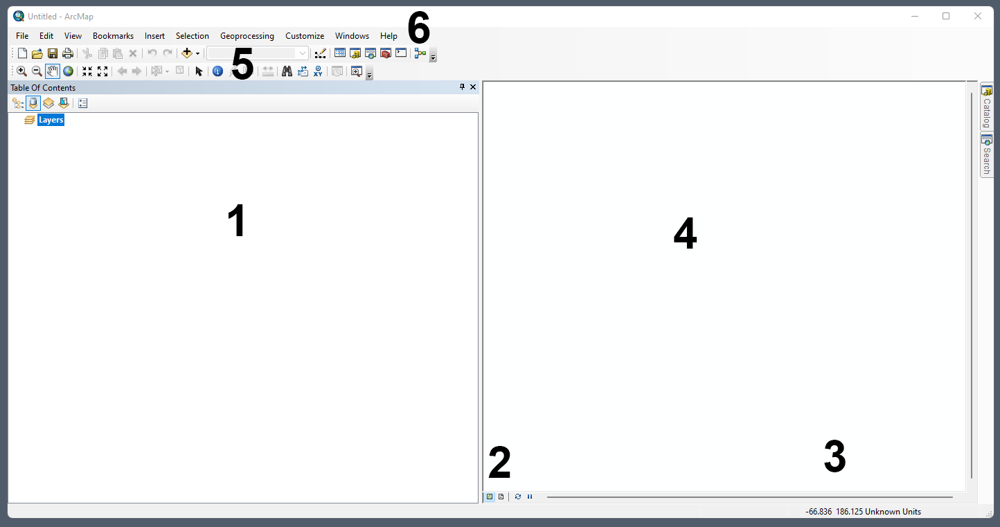
- 1 Table of Contents - Layers
- 2 Data View vs Layout View tabs
- 3 Status Bar + Map Coordinates
- 4 Data View Pane
- 5 Standard Toolbar(s)
- 6 Main Menu Ribbon
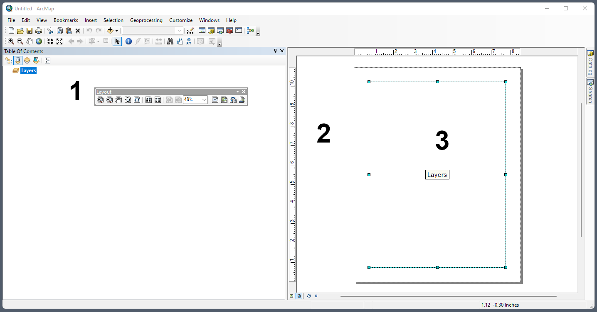
- 1 Layout Toolbar
- 2 Layout View Pane
- 3 Layout Canvas
Step 4
We will remove all layers except those on the 110m_physical and 110m_cultural file paths. Will also discuss the damaged Data Source paths noted as red exclamation marks:
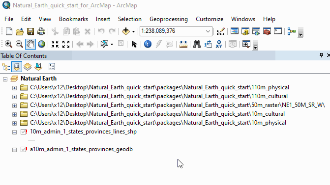
Next, we will preview the various display modes in Table of Contents; reorganize layers in order to stack the raster 50m at top of Table of Contents; and view data connection to ArcCatalog:
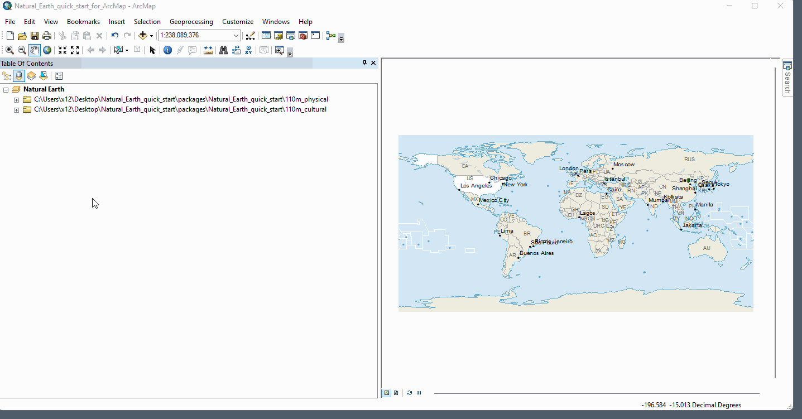
Next we will create a new project and explore the ArcCatalog (file cabinet icon on standard tool bar) procedure to connect to a data source then load new layers of data individually. Once loaded, we will symbolize a layer, followed by a layer export/save to the data source directory:
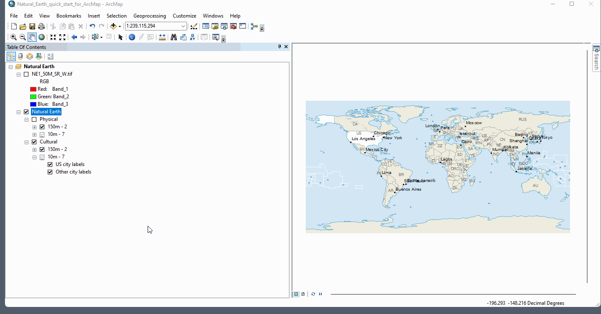
Step 5
Next, create a new .mxd project and import ne_50m_land via the ArcCatalog. We will create a Spatial Bookmark for New York City and explore options for Spatial Bookmarks within an .mxd project.
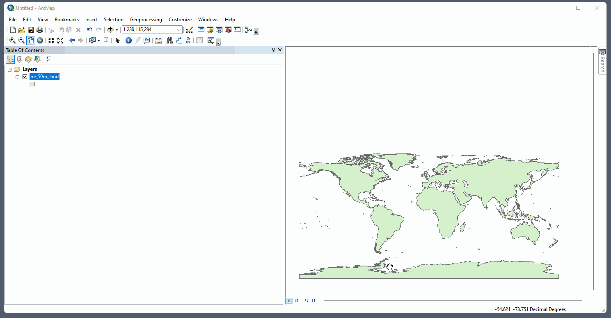
.mxd.Step 6
With ne_50m_land loaded, we will review vector symbology options via Right-Click Layer > Properties > Symbology.
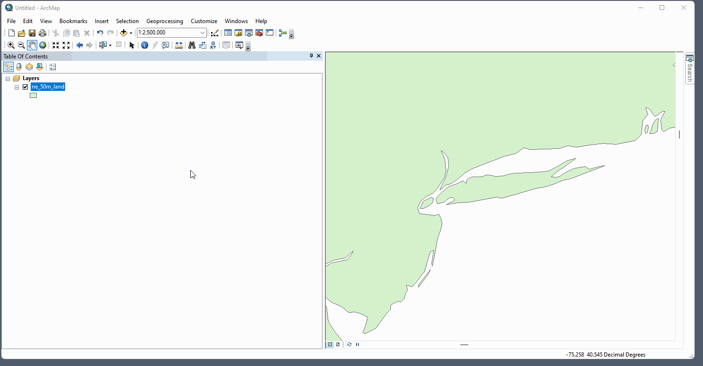
Step 7
With ne_50m_land loaded, we will zoom to layer scale. We will then save the .mxd before proceeding to Layout View to begin cartographic output for this one vector layer.
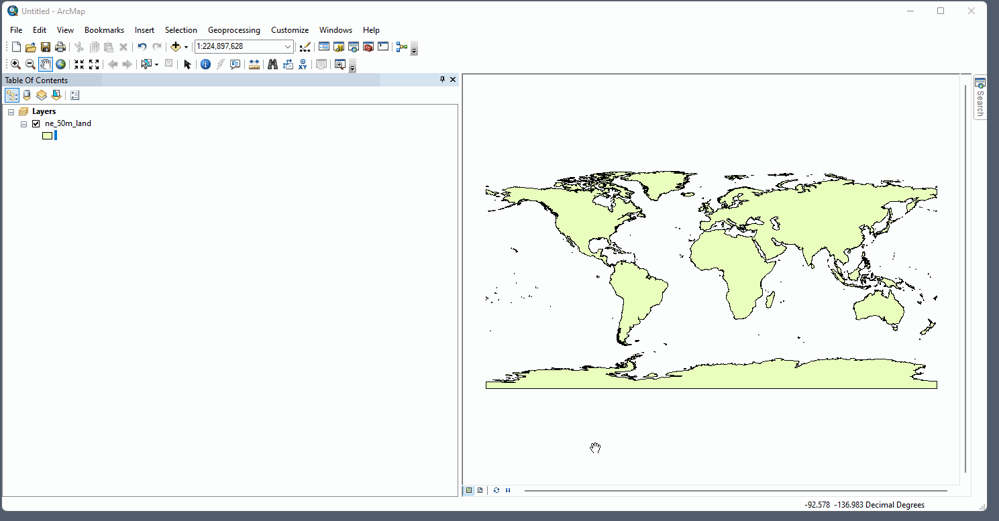
.mxd and reviewing Layout View.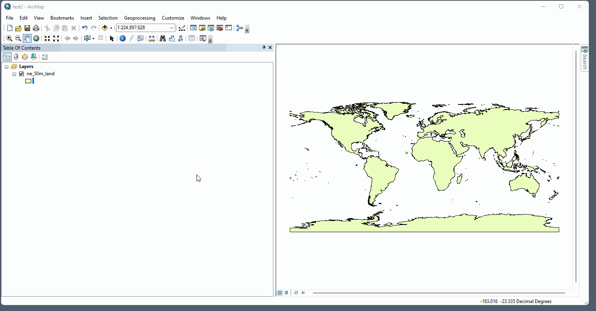
Step 8
In the assignment for this first week, we will be creating and exporting a map utilizing any Natural Earth features of your choosing. You can also choose at which scale you would like to produce your map. If you do choose to create a map at a global scale, it is recommended that you change the Data Frame coordinate properties to a map projection that works well at the global scale. The recommended map projection for this week’s assignment at the global scale will be Robinson projection. Here we will change the map layout coordinate system to Robinson projection. Make sure to Double-click > Properties > Coordinate Systems > Enter Robinson in Search inside the map layer frame, not outside:
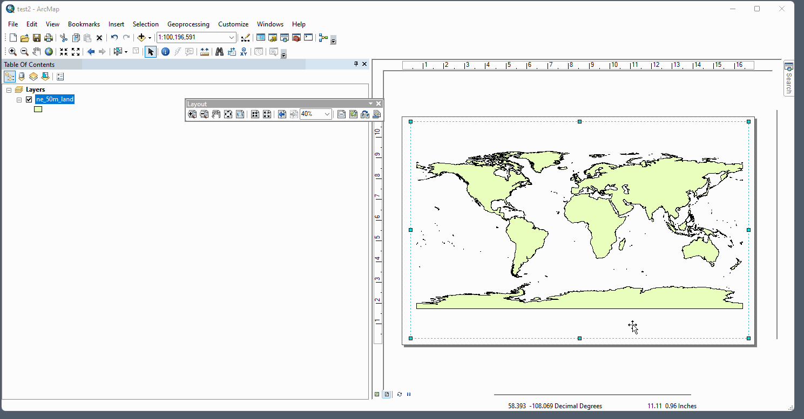
Step 9
We will turn now to the creation of legend items. Note that legends are grayed out in Data View and only become available and active in Layout View. Also note Legend Properties dialog box which is the location to access all editable component of a map legend.
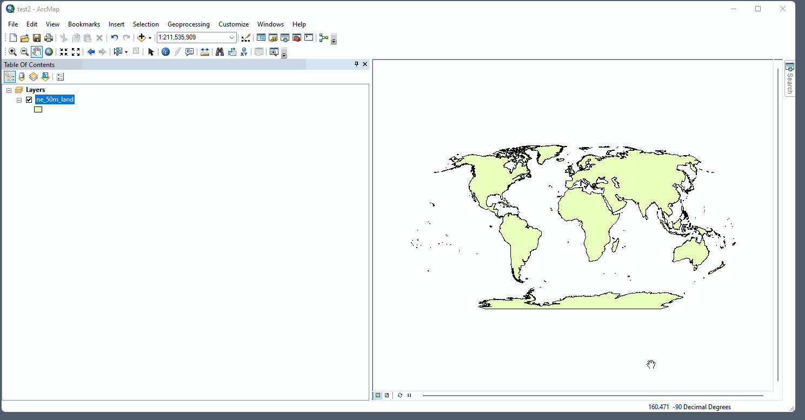
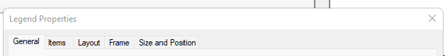
Step 10
Finally we will explore cartographic export options from a project .mxd.
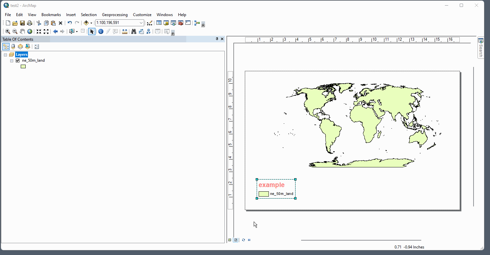
.mxdConcluding Remarks
In this ArcGIS Desktop orientation, we were able to load data and create a final cartographic output. We utilized many of the core components of the software interface necessary for creating basic cartographic outputs. These components will be used to complete the first week assignment in which we will use the same Natural Earth dataset, designing a map featuring thematic layers of your own choosing.